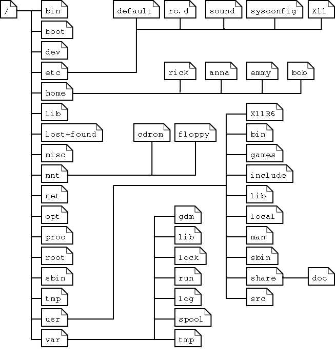

Markup Languages
A little about computers...
A computer is essentially an adding machine wired to a clock that ticks/ performs a simple calculation a couple billion times a second, querying and saving back data to a storage device (hard drive or memory) as it goes. Learn more... ⎋
Operating System

The operating system is the program (series of instructions) that runs when you turn on your computer. It handles inputs (keyboard, mouse, camera, network connections) and outputs (monitor, speakers, network connections), manages shared access to computing resources and memory, and reads and writes data to the file system on behalf of any number of simultaneously running applications (web browser, code editor, text document, music player, etc)
User Interfaces
Computers can receive user input through either a command line interface (CLI) or a graphical user interface (GUI).
In a command line interface (A.K.A. "Console", "Terminal", or "Shell"), the user types commands using the keyboard to tell the computer to take an action. The computer will display the results of the operation by writing text to the screen.
In a graphical user interface, the mouse is used to interact with skeuomorphic icons to open files and applications, navigate the file system, or change settings as well as input text through the keyboard which is passed to the currently "focused" element (such as the body of an email or the URL bar in your browser).
Graphical user interfaces are generally thought easier to use. Command lines allow programmers more powerful and fine-grained control over their computers.
File System
The file system organizes the data stored on your hard disk. The underlying storage mechanism has no concept of a file, it only knows of disk blocks, containing binary data, numbered sequentially by their memory address.

The file system does the translation between the formless series of 1's and 0's and the data structures the users interact with (files organized in folders).

Exercises
Make a folder on the desktop to hold all your code for this course; call it "Projects" or something that makes sense to you.
- Use
[CTRL + SHIFT + N] to create a new folder inside the one you just created.
- Open Sublime Text.
- Create a new file
[CTRL + N]
- Write a short poem
- Save
[CTRL + S] the file into your code folder with a .txt file extension
A note on file names: For practical reasons to do with how files are referenced in different contexts, always save files in all lower case letters with no spaces. We recommend using_underscores.html
Interview your partner and create a text document introducing them (they should make one introducing you, too). Here are some ideas to get you started:
- A short bio
- What is their programming background?
- Why do they want to learn to code?
- What are their goals for this course specifically?
- Other hobbies and interests?
- What are their favorite websites?
Be prepared to give a 30 second presentation introducing your partner.
Formatting & Markdown
Formatted Text
Text is cool, but you know what's really cool? formatted text. Let's translate our .txt text document introducing our partner into a .rtf Rich Text Format one.
- Search
[CMD + SPACE] for the textEdit application and create a formatted document.
- Copy in the notes from your interview.
- Use the GUI-style toolbar to create bold, italic, and underlined text.
- Set the color of certain text and background sections.
- Change the font face, font size, and font style.
- Change the justification (left, center, right).
- Create bulleted and numbered lists.
- Get help
[CMD + SHIFT + ?] to find the "attach file" option to add a picture
- Get help
[CMD + SHIFT + ?] to find the "add link" option to link selected text to a or .
- Save the document
[CMD + S] with a .rtf file extension
- Try opening your
.rtf document using Sublime Text. What's up with that?
Markdown
Formatted text is nice, but clicking buttons will never scale. We need to be able to programmatically describe how we want our text processed.
Markdown is a markup language. Markup languages mix-in special sequences of coded characters to specify the intended layout and style of their text.
Copy the following Markdown code into your Sublime code editor:
# This is a header
## This is an even smaller header
### Even smaller...
###### Quite small
Here is some normal text. A paragraph, even!
*This text is in italics.*
**This text is in bold.**
***This text is in both.***
~~This text is rendered with strikethrough.~~
Sometimes you want to embed some \*stylized text\*
right into **your paragraph.** Pretty cool, right!
* Item
* Item
* Another item
or
+ Item
+ Item
+ One more item
or
- Item
- Item
- One last item
1. Item one
2. Item two
3. Item three
w/ sub-lists
1. Item one
2. Item two
3. Item three
1. Sub-item
2. Sub-item
4. Item four
---
[I'm a link to a web page!](http://www.google.com)


Notice it just looks like normal text? We need to install a package to be able to parse the markdown styles. Packages are a collection of resource files used by Sublime Text: plugins, syntax highlighting definitions, menus, snippets and more. Sublime Text ships with several packages, and more are available. Visit https://packagecontrol.io/ and follow the instructions under "Installation" to install Package Control, a simple way to browse and install packages within Sublime text palette.
After you have installed Package Control, we need to install a package to parse and edit Markdown text.
Press [CTRL + shift + P] to open Command Palette.
Start typing "install" - as you type, the Command Palette filters down commands to those containing the characters you type. Select "Package Control: Install Package." After a moment, the Command Palette will be filled with package names. Start typing the name of the package you want to install, or a keyword such as "markdown" to list all packages with the keyword in their names. Use the arrow keys to select the package you want - which should be called "MarkdownEditing" - and press [ enter ]. The package will be downloaded and installed.
Now, we can edit our markdown, but we still need to be able to view it.
Press [CTRL + shift + P] to open Command Palette. Then, type "install" and select "Package Control: Install Package." Type "markdown," select "GitHubFlavoredMarkdownPreview," and press [ enter ]. Close and reopen Sublime Text, which will activate your new package installations.
Create a new file [CTRL + N] called "markdown.md," copy and paste the text below into it, and then press [CTRL + S] to save it.
Press [ CTRL + SHIFT + G ] to view the markdown rendered in the browser
# This is a header
## This is an even smaller header
### Even smaller...
###### Quite small
Here is some normal text. A paragraph, even!
*This text is in italics.*
**This text is in bold.**
***This text is in both.***
~~This text is rendered with strikethrough.~~
Sometimes you want to embed some \*stylized text\*
right into **your paragraph.** Pretty cool, right!
* Item
* Item
* Another item
or
+ Item
+ Item
+ One more item
or
- Item
- Item
- One last item
1. Item one
2. Item two
3. Item three
w/ sub-lists
1. Item one
2. Item two
3. Item three
1. Sub-item
2. Sub-item
4. Item four
---
[I'm a link to a web page!](http://www.google.com)


Markdown Exercises
The local photo showed up fine for me... How come it's broken for you?
Copy the interview with your partner into Sublime and mark it up in the Markdown format. Use [CTRL + SHIFT + L] to set the encoding language for the . At a minimum, use the following formatting:
- Headers of several different sizes
- italic text
- bold text
- an unordered list
- an ordered list
- a "horizontal rule" delimiter
- a link to a web page
- a link to an image on the web
- a link to an image on your computer
- Link to a few of their favorite web sites
- Be creative!
When you are done, save your work as a public gist and share it in slack chat. Copy a few other people's markdown files into your Atom code editor and practice using "markdown preview" to show them in their rendered form.
Use the command palette to copy the markdown as HTML. Paste it into a new document and puzzle over it.
Challenge:
Over the course of this class, you are going to build the Internet's premier watering hole for a very specific community. Examples include: Foodies in Topeka, Russian-speaking fantasy football enthusiasts, and alpaca-fur-loving fashionitas.
- Take a moment to think of a couple of ideas. They can be funny or serious or anything else. No rules.
- Close your eyes and envision your ideal community members in as much detail as possible. How will they want to interact with your site? Are you excited to invest time in helping these people?
- Collect feedback about your ideas from some of your classmates. Also take some time to get to know them a little.
- Give them your feedback on their ideas.
- Decide on your final idea and prepare a 30-second elevator pitch to present it to the class.
- Create a one page "pitch sheet" using Markdown to hand out to investors. Include some charts and graphs as well as inspirational stock photography.
What is HTML?
HTML is a markup language for describing the structure and content of web documents (web pages). It is comprised of markup tags and text content nested inside each other.

HTML Tags
HTML tags are keywords (tag names) surrounded by angle brackets:
<tagname>content</tagname>
- HTML tags normally come in pairs like <p> and </p>
- The first tag in a pair is the start tag, the second tag is the end tag
- The end tag is written like the start tag, but with a slash before the tag name
A small HTML file
As written by the programmer in a code editor, it is an inert document- data sitting on the hard drive- until its code is executed by an interpreter:
<!DOCTYPE html>
<html>
<head>
<title>Page Title</title>
</head>
<body>
<h1>My First Heading</h1>
<p>My first paragraph.</p>
</body>
</html>
Web Browsers
The purpose of a web browser (Chrome, IE, Firefox, Safari) is to read HTML documents and display them.
Reading & Parsing
By following the proscribed rules of HTML, a web browser understands this to be a document with a heading and a paragraph. Here is what the browser interpreter thinks when given this code.
- The DOCTYPE declaration defines the document type to be HTML
- The text between <html> and </html> describes an HTML document
- The text between <head> and </head> provides information about the document
- The text between <title> and </title> provides a title for the document
- The text between <body> and </body> describes the visible page content
- The text between <h1> and </h1> describes a heading
- The text between <p> and </p> describes a paragraph
It then parses apart the file. The white area below (inside the <body> tag) is the only part that actually appears in the browser window (visible to the user).
<html>
<head>
<title>Page title</title>
</head>
<body>
<h1>This is a heading</h1>
<p>This is a paragraph.</p>
</body>
</html>
It builds an in-memory representation of a new web page called a Document Object Model
And renders into the browser window for the user to see and interact with:
See for yourself:
- Download Chrome (web browser)
- Open this file⎋ and view its source
[CMD + OPTION + U].
- Use the Elements panel of the Chrome developer tools [CMD + OPTION + I] to answer the following questions:
- What font-size does the browser give an <h1> element by default?
- What font-weight does the browser give an <h1> element by default?
- How does the browser render the extra spaces and new lines in the last paragraph?
- Are there any parts of the body that are not rendered into the browser window?
My First HTML Document
- Create your own HTML document similar to the above, without copy & pasting.
- Save the file as
index.html
- Make it a launch announcement for the online community you are starting.
- Describe what kind of community it will be, and the types of goals you have for it.
- Set a few rules and guidelines that members will need to follow.
- Correctly set up the HTML document with a head and body tag
- The page should have a title tag in the head
- Use an h1 tag
- We'll need some paragraphs of text
- Save the file as
index.html in your code folder.
- View your
html file rendered in the browser by switching focus [CMD + TAB] to the Finder GUI and Opening the File System to your Desktop folder [CMD + SHIFT + D]. Open the context menu [CTRL + click] and send the file as an input to the Chrome (web browser) application.
- View Source
[CMD + OPT + U] to see your file's source code from the browser's point of view.
A few new HTML tags
Now check out this page! ⎋
- Use the Elements panel of the Chrome developer tools
[CMD + OPT + I] to answer the following questions:
- What font-size does the browser give an <h2> element by default?
- What font-size does the browser give an <h6> element by default?
- What font-style does the browser give an <em> element by default?
- What text-decoration does the browser give an <a> element by default?
- What list-style-type does the browser give an <li> element which is a child of a <ul> by default?
Some things to note:
This link tag has an attribute whose name is href and whose value is a url.
Attributes provide additional information about an element. They appear on the opening tag of the element and are made up of two parts: a name and a value, separated by an equals sign.
<img src="https://i.imgur.com/81qyN1y.jpg" alt="This text will show up, only if the image doesn't (also good for screen readers)">
Image tags have an attribute named src whose value is the location of the image to be displayed.
Exercise: About Us
Let's write an "About Us" page introducing (the potentially fictional) individuals running your community site.
- Correctly set up the HTML document with a head and body tag
- The page should have a title tag in the head
- Use a few "horizontal rule" delimiters or line break tags as appropriate
- Use at least three different sizes of header tags
- Use ordered and unordered lists
- Use some <em> and <b> tags
- Use some <br> and <hr> tags
- Include profile photos
- In fact, we'll need plenty of images (on your computer or on the web). Users love images!
- Link to some external websites
- Create a "navigation bar" to allow users to click between the landing page and the "about us" section
- We need easter eggs! Have at least a few SECRET COMMENTS that visitors can only see if they view your source code!
Deploy!
Okay! Great work so far. Now let's get our web pages live in the internet.
- Sign up for free Github static hosting.
- Follow the instructions on Github Pages. Make sure to select the "Project Site" and "Start from scratch" options.
- Follow the directions. If you need an example, use this video walkthrough.
Done Already? If you're feeling bold, check out this HTML reference document which lists all the available HTML tags. We'll cover some of them later- like forms and iframes- but others are too obscure or specialized for us to spend time on, so read up if you're interested!